Обзор
В этом уроке объясняется, как мох в Ryse стал трехмерным и придал ему глубину.
Вопреки распространенному мнению, здесь не использовался специальный шейдер, но на самом деле это была старая техника, используемая для создания эффекта пушистой трехмерной поверхности с глубиной. Очень похожая техника использовалась в The Shadow of Colossus для PS2.
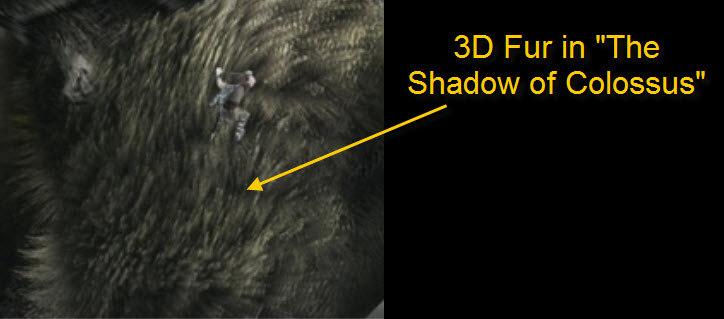
Разбивая мох, можно увидеть, что он состоит из 4 полигональных слоев, нависающих один над другим. UV-развертки этих полислоев находятся в разных частях текстуры мха.
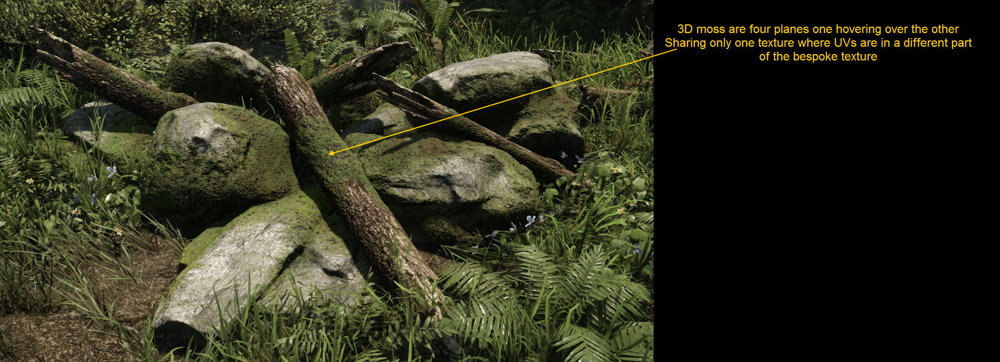
Подготовка текстуры
Глядя на текстуру мха, мы видим, что текстура разделена на 4 секции. В разделе диффузии мы видим, что это всегда одна и та же текстура, только с разными значениями. Левая верхняя часть — самая яркая, правая нижняя — самая темная.
При создании альфа-канала для текстуры у нас есть верхний левый самый прозрачный (много черных и темно-серых значений) и нижний правый самый непрозрачный (много белых и светло-серых значений, почти нет черных значений).
Такая настройка позволяет нам просматривать сквозь верхний слой разреженности все остальные слои под ним, при этом самый плотный слой находится внизу и служит основой. Это позволит нам имитировать некоторую глубину и сделать весь мох трехмерным, сохраняя при этом размытый эффект, которым известен мох.
Текстура будет использоваться следующим образом: темная непрозрачная часть диффузного слоя будет использована в качестве базового многоугольного слоя мха, а самая яркая и прозрачная часть - в качестве верхнего многоугольного слоя, а между ними, в соответствии с нашими значениями, будут две другие части.
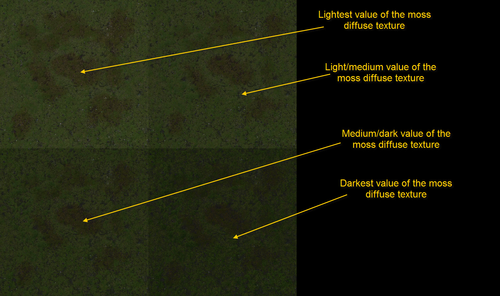
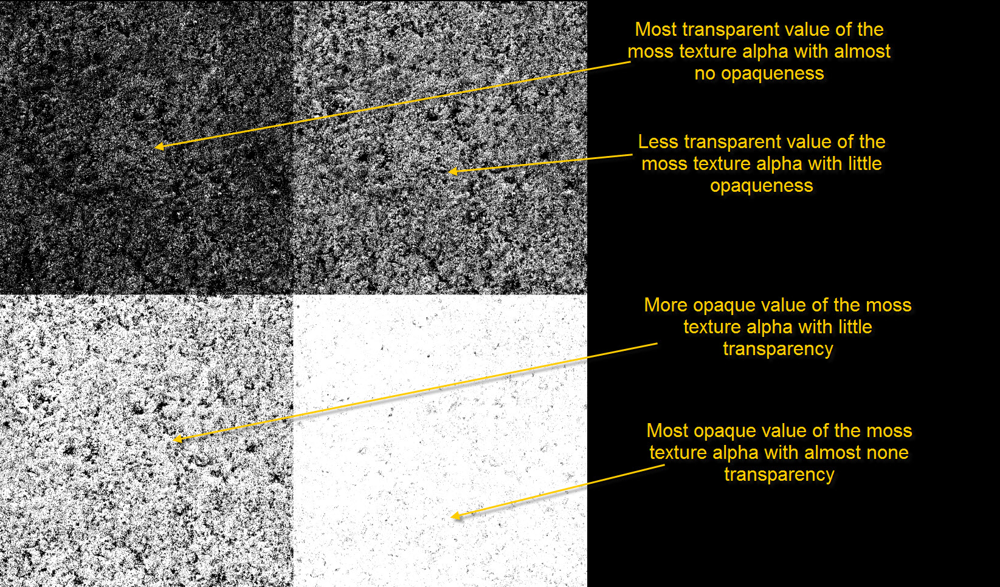
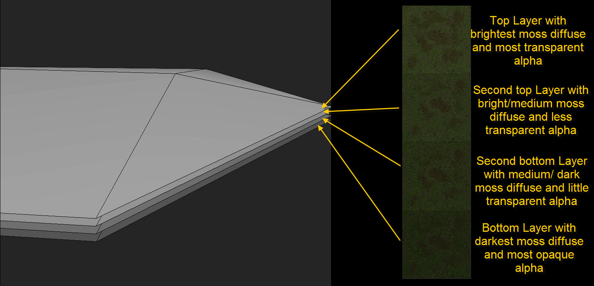
Чтобы получить наилучшие результаты, мы создадим текстуру мха размером 2К, затем отредактируем ее и соответствующим образом настроим ее яркость и альфа-каналы, пока не получим хороший результат.
Разделив текстуру на четыре части, каждая отдельная часть имеет окончательное разрешение 1024x1024.
Чтобы увидеть, как мох выглядит в движке, мы применили текстуру к простой плоскости.
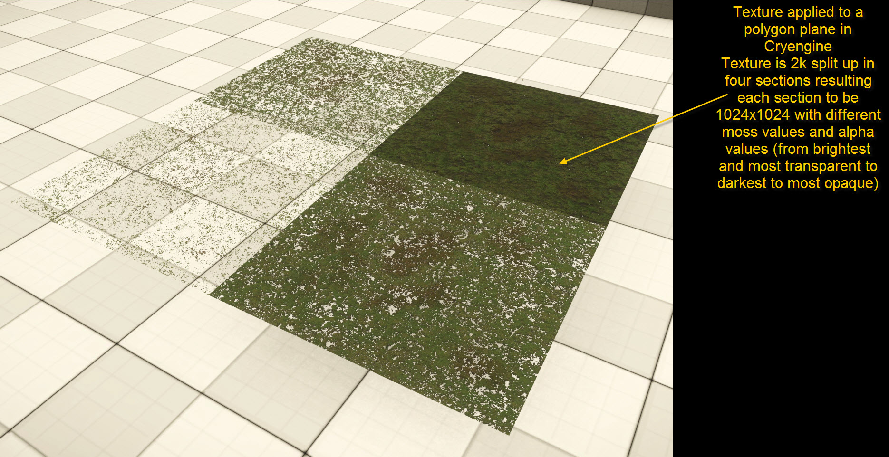
Подготовка геометрии
Для отображения мы используем простую сетку камней. 3D-мох следует использовать в основном на таких объектах, как камни, скалы, стволы, стены и т. д.
Если требуется более гибкое использование, куски мха можно создавать как отдельные активы, а не как отдельную часть актива.
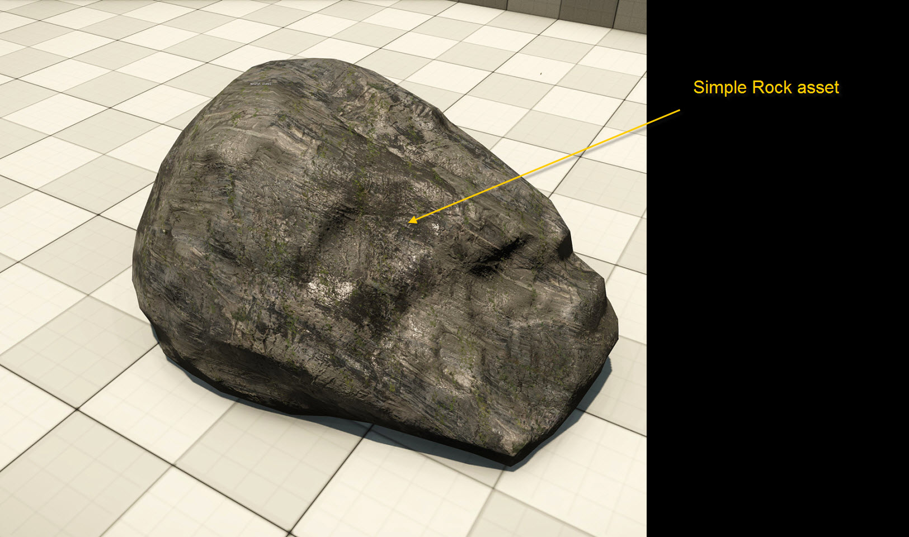
Глядя на камень, мы видим, что он был триангулирован. Мы могли бы определить местоположение нашего мха, но, дублируя эти грани, мы потратили бы впустую много геометрии.
Итак, мы собираемся заново топологизировать эту часть камня. Это даст нам больший контроль над краем и потоком UV.
Чтобы сделать это быстро и эффективно, 3DS Max предлагает несколько инструментов. Используя Freeform -> Polydraw, можно быстро покрыть область на камне простой многоугольной формой.
Эта вновь созданная многоугольная плоскость будет служить базовым и самым нижним слоем мха. Ничего страшного, если исходная сетка камней выступает за пределы плоскости полигона, так как позже это будет изменено.
У нас должен получиться результат, как на изображении ниже.
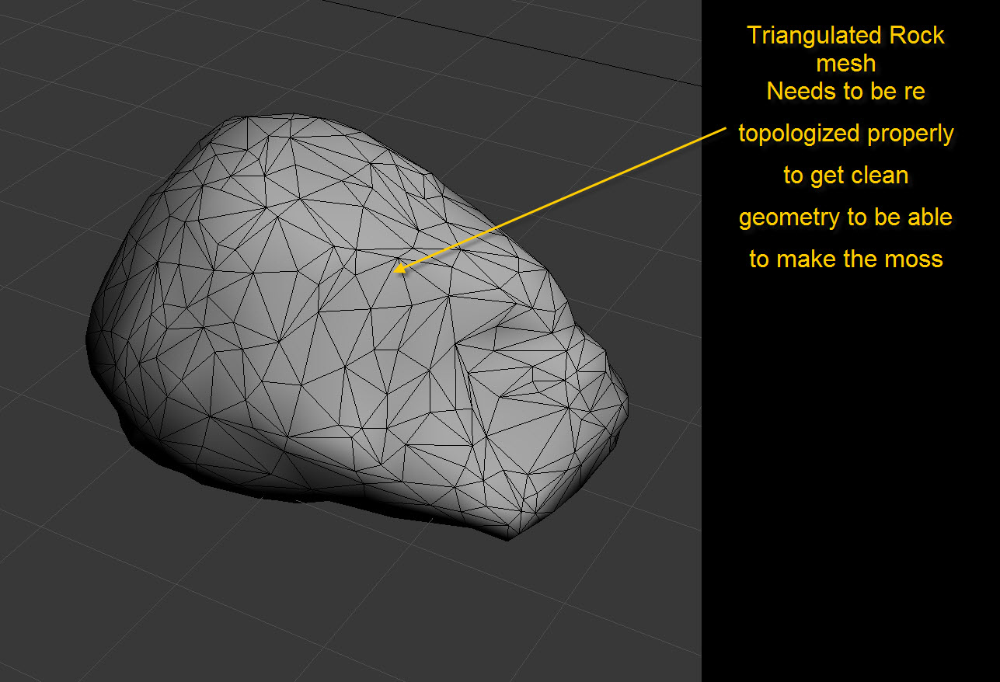
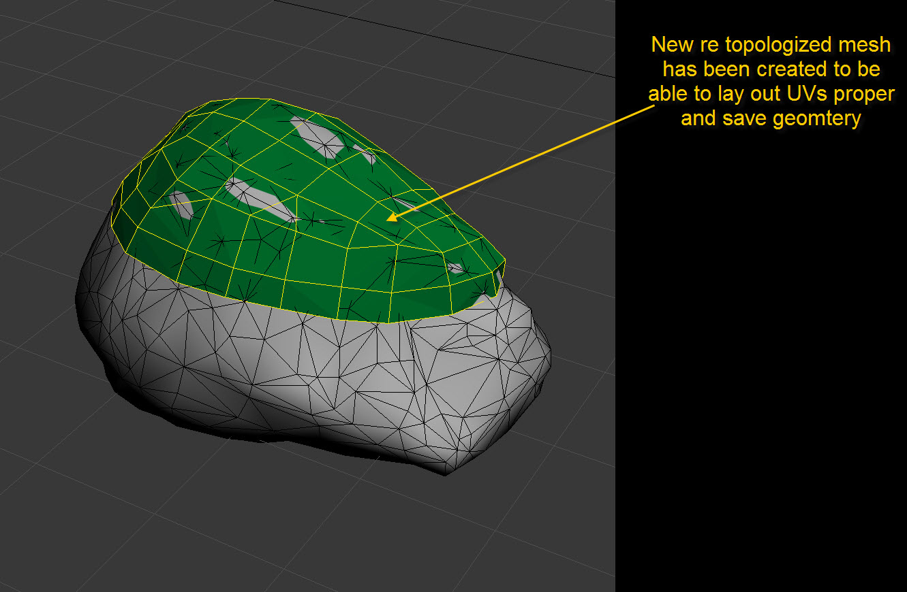
Чтобы создать эффект наслоения, мы применяем следующие модификаторы к нашей плоскости многоугольника:
- Преобразуйте полиплоскость в редактируемый полигон с помощью «Editable Poly».
- После этого к стеку применяется модификатор «Unwrap UVW», поэтому на каждом отдельном слое мы можем перемещать оболочки UV вверх, вниз, вправо или влево ровно на 0,5 в пространстве U и V, чтобы иметь возможность покрыть все четыре секции нашей текстуры.
- Первый модификатор «Push» теперь добавлен в стек, этот модификатор push влияет на всю фигуру, поэтому конечные расстояния между всеми слоями полигонов можно регулировать.
- Как только мы переместили плоскость многоугольника на нужное расстояние, мы выбираем вершины на границе плоскости и применяем еще один «Редактируемый полигон».
- Теперь нам нужно применить к вершинам второй модификатор «Push». Границу необходимо отодвинуть назад в скалу, иначе мы получим резкий переход от камня к мху, поскольку граница будет четко видна. После того, как все четыре слоя будут созданы и границы каждого из них будут последовательно отодвинуты назад, к камню будет создан нечеткий трехмерный переход.
- Последний примененный «Редактировать поли» служит для одновременного изменения всех полиплоскостей и внесения окончательных корректировок в общую форму.
Пожалуйста, не сворачивайте стек модификаторов!
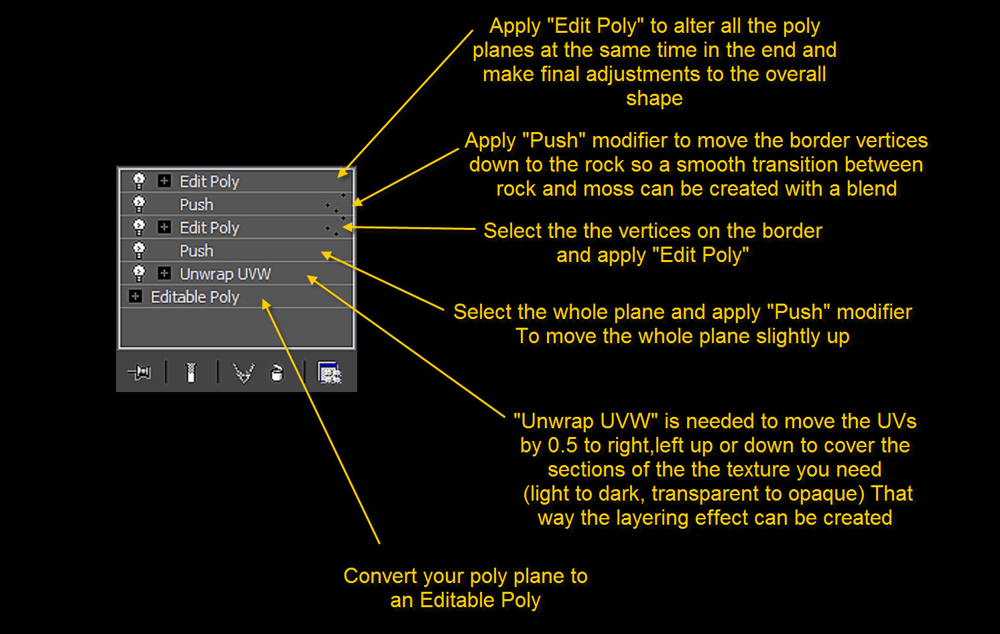
Закончив с нашей базовой многоугольной плоскостью, мы начинаем повторять те же шаги для следующих трех оставшихся плоскостей.
Вот подробное описание:
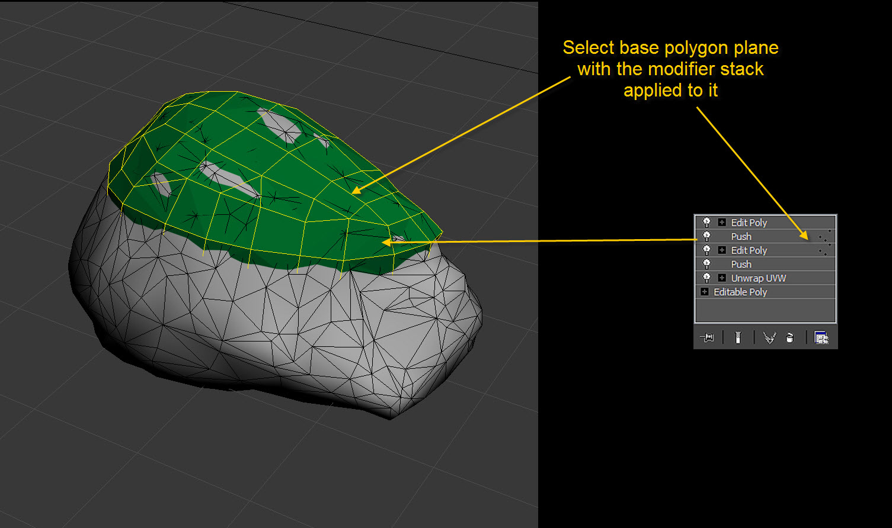
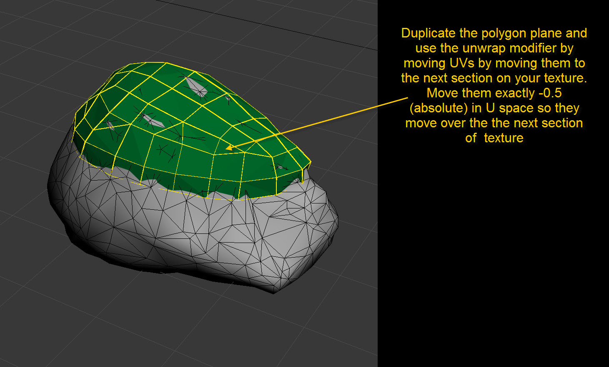
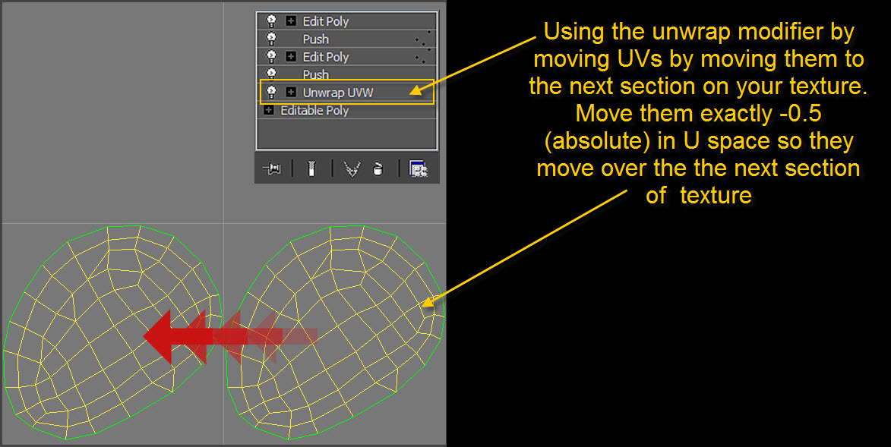
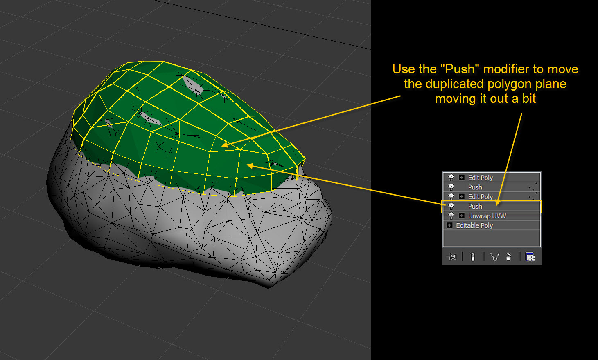
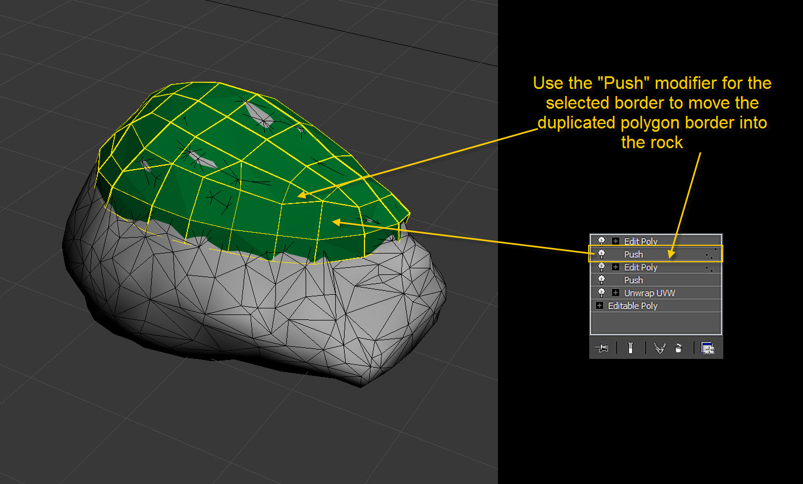
Вкратце, чтобы создать плоскости многоугольника и наложить их на слои:
- Клонировать, чтобы создать новую полигональную плоскость на основе базовой полигональной плоскости.
- Отредактируйте UV для оболочки и определите их новое положение по дублированной полигональной оболочке.
- Выдвиньте новую плоскость многоугольника с помощью модификатора «Push».
- Нажмите на модификатор «Редактировать полигон», чтобы выбрать вершины границы.
- Используйте модификатор «Push» на граничных вершинах, чтобы вдавить их обратно в скалу.
- Снова выберите модификатор «Edit Poly», чтобы позже настроить все слои мха.
Корректировка слоев мха и использование краски вершин для создания плавного перехода.
После дублирования наших полигональных плоскостей, перемещения UV и их перемещения мы экспортируем камень в CRYENGINE. И наш результат на данный момент выглядит так, как показано на изображении ниже.
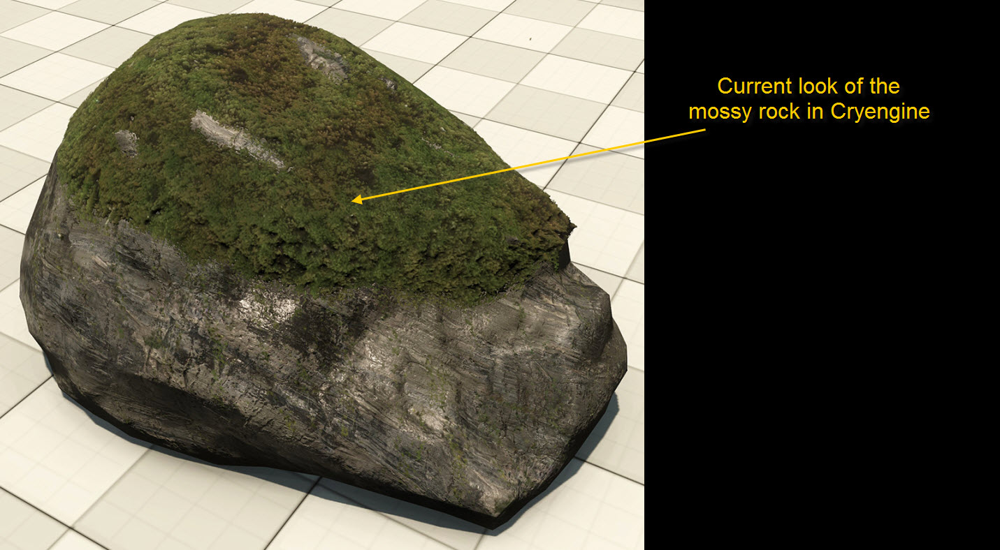
Глядя на мох внутри CRYENGINE, мы видим мох. Но на самом деле мох просачивается в трещины и выходит из них, и сейчас он выглядит ровным. Чтобы исправить это, мы используем последний "Редактировать Поли" модификатор, поскольку мы их не сворачивали. Таким образом, вы можете изменить все вершины одновременно.
Попробуйте следовать рекомендациям реального мира, поднимая одни вершины и опуская другие.
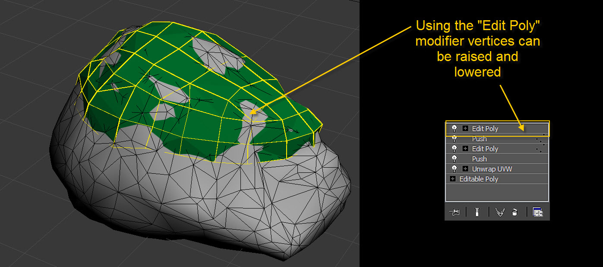
После экспорта камня в CRYENGINE результат будет выглядеть так, как показано на изображении ниже:
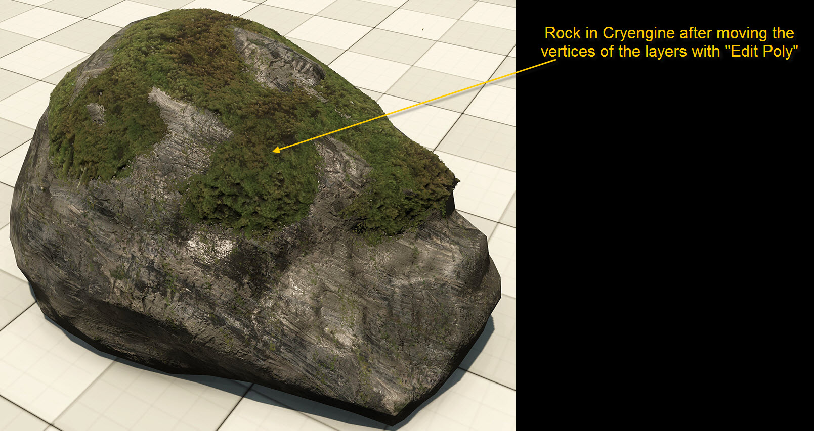
Как мы видим, переходы между камнем и мхом сейчас немного резкие. Чтобы исправить это, мы собираемся применить некоторое смешивание вершин, чтобы сгладить переходы и придать некоторую детализацию нашему камню.
При использовании этой техники следует учитывать некоторые вещи. Техника слоистого мха может быть очень дорогой с точки зрения полигонов, поэтому ее следует использовать только для уровня LOD0.
Чтобы избежать видимого обмена, когда ресурсы перемещаются между LOD0 и LOD1, нарисуйте смесь мха на LOD1 там, где исходный слоистый мох находился на LOD0. Таким образом, переключение между LOD0 и LOD1 практически незаметно.
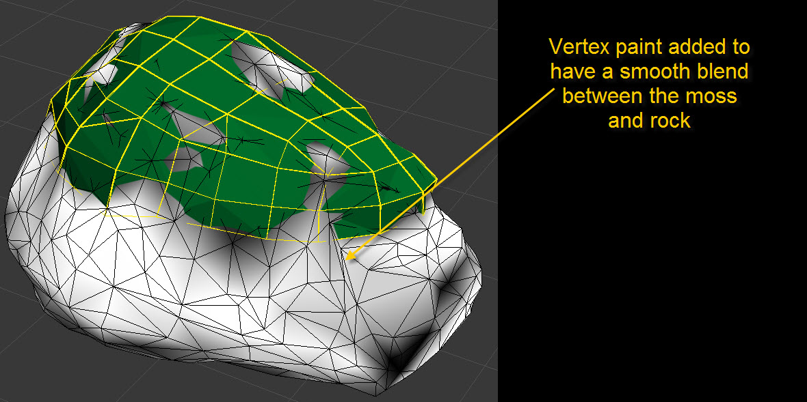
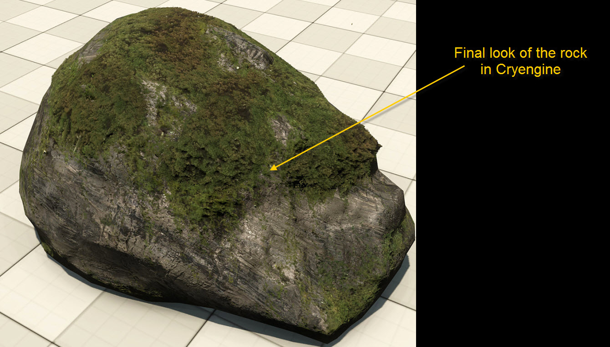